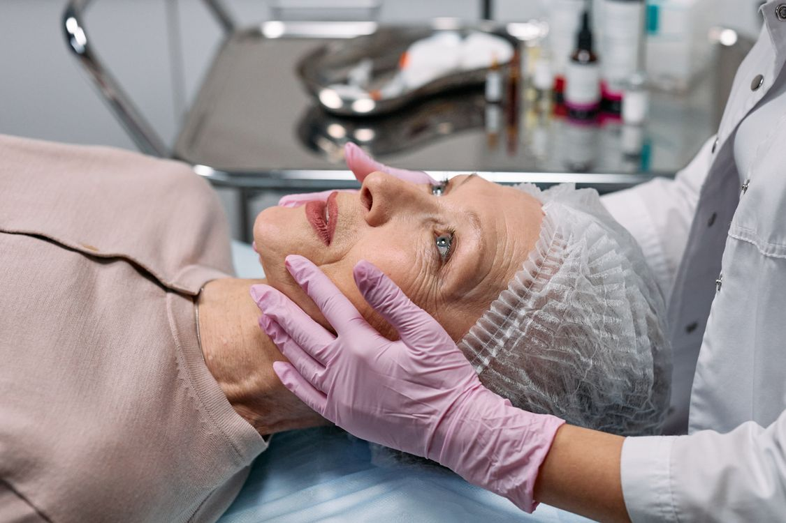
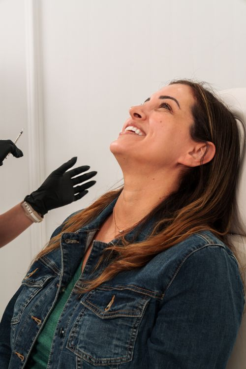
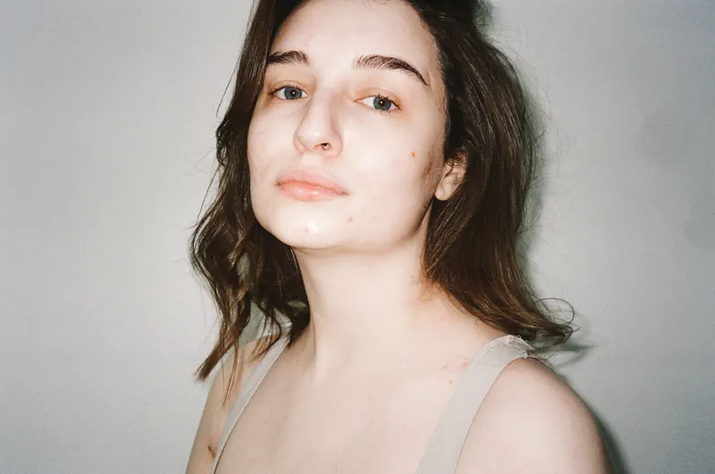
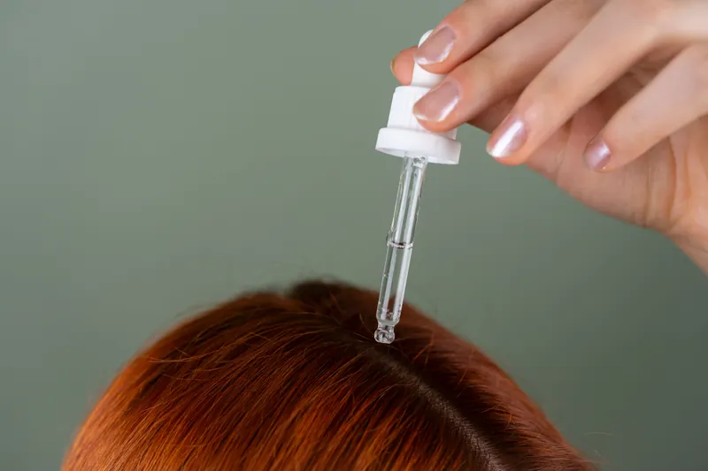

Firmeza e qualidade da pele
Avalio flacidez e perda de sustentação, inclusive quando o rosto muda após emagrecimento com medicações.
Bioestimulador de colágeno no rosto
Antes de indicar qualquer procedimento, escuto sua história e avalio o que a sua pele precisa.
O bioestimulador pode ser um caminho. A resposta começa na consulta, não em uma fórmula pronta.
Agendar minha avaliaçãoAntes do procedimento, vem a escuta
Essa é uma das primeiras perguntas que faço na consulta. Quero entender a sua queixa antes de pensar em um procedimento.
Se você se reconheceu em alguma dessas situações, posso avaliar o seu caso.
Informação para decidir com calma
Explico o bioestimulador como um tratamento injetável que estimula a produção de colágeno. Seu efeito é gradual. Ele não é a mesma coisa que um preenchimento.

Avalio flacidez e perda de sustentação, inclusive quando o rosto muda após emagrecimento com medicações.
Explico que o organismo produz colágeno ao longo do tempo. A evolução e a resposta variam de pessoa para pessoa.
Avalio a área, a anatomia e os seus objetivos para definir o produto e o número de sessões. Não existe um protocolo único.
O que acontece na prática
Primeiro, entendo a sua queixa e examino a pele. Se o bioestimulador for indicado, explico o produto, a técnica e os cuidados antes de começarmos.

Um plano para cada pessoa
Neste vídeo, conto por que a indicação depende da sua pele, da sua história e do resultado que você deseja.
Agendar minha avaliaçãoUma confusão comum
Posso considerar os dois em um plano de cuidado, mas eles cumprem funções diferentes. Primeiro avalio; depois explico as opções.
Como funciona comigo
Examino sua pele antes de indicar qualquer tratamento. Assim, você entende o motivo de cada decisão.
Conversamos sobre suas queixas, seu momento e o que você deseja mudar.
Apresento as possibilidades e digo com clareza quando o bioestimulador não é a melhor escolha.
Se decidirmos pelo tratamento, sigo com você nas etapas e reavaliações.
Quem cuida de você
Sou médica formada pela UNESP, com residência em Clínica Médica e Dermatologia e especialização pela UNIFESP. Na minha prática, começo pela pessoa, não pelo procedimento.
Dra. Paula Sian Lopes · CRM-SP 111963 · RQE 38348
Além dos bioestimuladores
Conheça algumas áreas em que posso ajudar você, sempre a partir de uma avaliação individual.

Avalio a origem e monto um cuidado adequado à sua pele.
Considero sua rotina e a resposta da pele ao planejar o cuidado.

Investigo possíveis causas antes de propor um tratamento.
Examino e explico quando um procedimento pode ser necessário.
Acompanho sua pele também fora dos procedimentos estéticos.
Experiências na consulta
Compartilho aqui trechos de avaliações públicas. Cada pessoa tem uma história e um cuidado próprios.
ouviu com cuidado as minhas queixas. […] me explicou em detalhes
avaliação e explicação detalhada […] propostas de tratamento coerentes
Dúvidas comuns
Neste vídeo, respondo às perguntas que mais escuto sobre dor, resultado e duração do tratamento.
Pode haver desconforto na aplicação. Converso sobre formas de reduzi-lo e explico o que esperar. Com alguns produtos, o efeito pode chegar a cerca de dois anos, mas a duração varia e não é uma promessa para todos os casos.
Explico que o efeito é gradual e costuma evoluir ao longo de semanas e meses. O ritmo depende da sua pele e do plano de tratamento.
Defino o número de sessões e os intervalos depois de examinar a sua pele. Não trabalho com uma quantidade igual para todas as pessoas.
Bioestimulador e preenchimento têm objetivos diferentes. Avalio se a sua queixa pede estímulo de colágeno, reposição de volume ou outro cuidado.
A perda de peso, inclusive com medicações, pode mudar o aspecto do rosto. Avalio a flacidez, a anatomia e o momento do emagrecimento antes de indicar qualquer tratamento.
Seu próximo passo
Na consulta, avalio seu caso e explico, com calma e honestidade, qual caminho faz sentido para você.
Agendar minha avaliação pelo WhatsApp